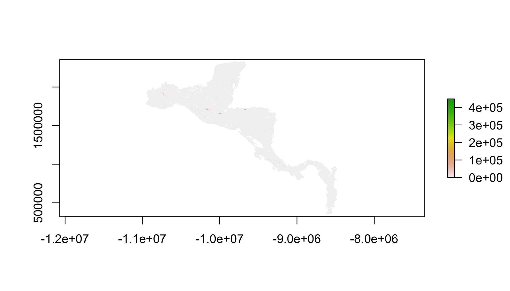
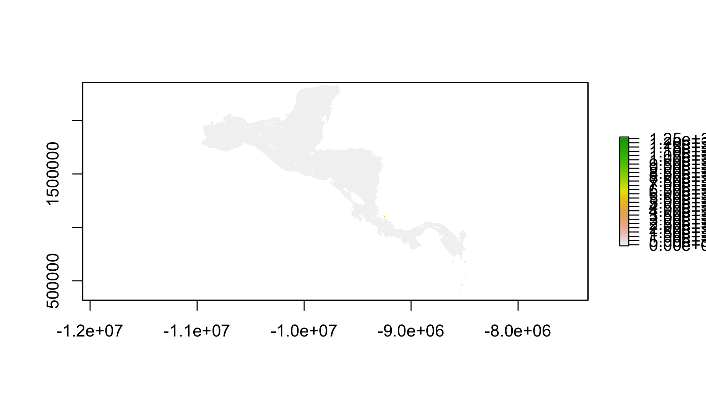
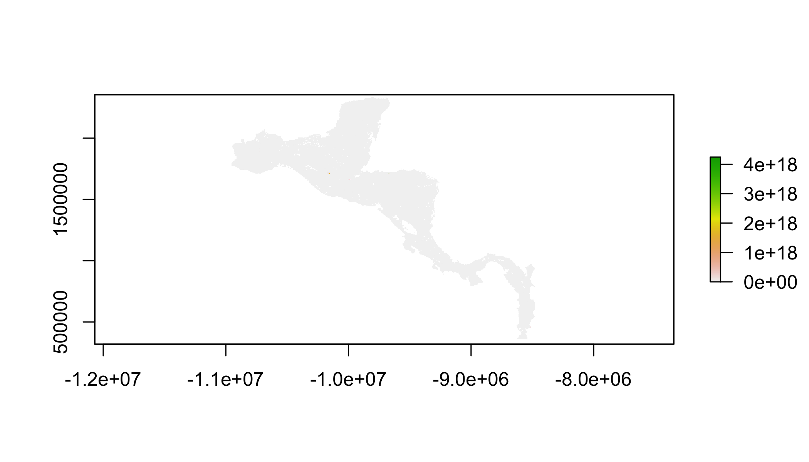

The R Script associated with this page is available here. Download this file and open it (or copy-paste into a new script) with RStudio so you can follow along.
Load the functions, and library (make sure ‘dismo’ is installed)
Note that you don’t need to wade through these functions to start, just run them and more to the next chunk where we begin using them.
library(dismo)
logit = function(pp) { log(pp) - log(1-pp) }
expit = function(eta) {1/(1+exp(-eta))}
ObsInfo.po = function(param) {
beta = param[1:dim(X.po)[2]]
alpha = param[(dim(X.po)[2]+1):(dim(X.po)[2]+dim(W.po)[2])]
lambda = exp(X.back %*% beta)
mu = lambda * area.back
p = expit(W.back %*% alpha)
p.po = expit(W.po %*% alpha)
nxcovs = length(beta)
nwcovs = length(alpha)
nparams = nxcovs + nwcovs
Hmat = matrix(nrow=nparams, ncol=nparams)
# beta partials
for (i in 1:nxcovs) {
for (j in 1:i) {
Hmat[i,j] = sum(X.back[,i] * X.back[,j] * mu * p)
Hmat[j,i] = Hmat[i,j]
}
}
# alpha partials
for (i in 1:nwcovs) {
for (j in 1:i) {
Hmat[nxcovs+i, nxcovs+j] = sum(W.back[,i] * W.back[,j] * mu * p * ((1-p)^3) * (1 - exp(2 * W.back %*% alpha)) ) + sum(W.po[,i] * W.po[,j] * p.po * (1-p.po))
Hmat[nxcovs+j, nxcovs+i] = Hmat[nxcovs+i, nxcovs+j]
}
}
# alpha-beta partials
for (i in 1:nwcovs) {
for (j in 1:nxcovs) {
Hmat[nxcovs+i, j] = sum(X.back[,j] * W.back[,i] * mu * p * (1-p))
Hmat[j, nxcovs+i] = Hmat[nxcovs+i, j]
}
}
Hmat
}
negLL.po = function(param) {
beta = param[1:dim(X.po)[2]]
alpha = param[(dim(X.po)[2]+1):(dim(X.po)[2]+dim(W.po)[2])]
lambda = exp(X.back %*% beta)
mu = lambda * area.back
p = expit(W.back %*% alpha)
logL.po = sum(X.po %*% beta) + sum(W.po %*% alpha) - sum(log(1 + exp(W.po %*% alpha))) - sum(mu*p)
(-1)*sum(logL.po)
}
negLL.pa = function(param) {
beta = param[1:dim(X.pa)[2]]
lambda.pa = exp(X.pa %*% beta)
alpha = param[(dim(X.pa)[2]+1):(dim(X.pa)[2]+dim(W.pa)[2])]
p.pa = expit(W.pa %*% alpha)
logL.pa = rep(NA,n.pa)
for (i in 1:n.pa) {
yvec=y.pa[i,]
navec=is.na(yvec)
nd=sum(yvec[!navec])
nj=sum(!navec)
pvec=p.pa[i,]
cp= (pvec^yvec)*((1-pvec)^(1-yvec))
cp[navec]=1
logL.pa[i]= log(prod(cp)*(1-exp(-lambda.pa[i]*area.pa[i])) + ifelse(nd==0,1,0)*exp(-lambda.pa[i]*area.pa[i]))
}
(-1)*sum(logL.pa)
}
negLL.poANDpa = function(param) {
param.po = param[1:(dim(X.po)[2]+dim(W.po)[2])]
param.pa = param[c(1:dim(X.po)[2], (dim(X.po)[2]+dim(W.po)[2]+1):(dim(X.po)[2]+dim(W.po)[2]+dim(W.pa)[2]))]
negLL.po(param.po) + negLL.pa(param.pa)
}
rarefy = function(pointSample,r){
pointSampleCopy = pointSample
pointSampleTrain = pointSample[0,]
pointSampleTest = pointSample[0,]
nsamples=1
while(dim(pointSampleCopy)[1] > 0){
rowID = sample(nrow(pointSampleCopy), 1)
s1 = pointSampleCopy[rowID, ]
pointSampleTrain[nsamples,] = s1
coordinates(s1) = c("X","Y")
proj4string(s1) = "+proj=cea +lon_0=0 +lat_ts=0 +x_0=0 +y_0=0 +datum=WGS84 +units=m +no_defs +ellps=WGS84 +towgs84=0,0,0"
coordinates(pointSampleCopy) = c("X","Y")
proj4string(pointSampleCopy) = "+proj=cea +lon_0=0 +lat_ts=0 +x_0=0 +y_0=0 +datum=WGS84 +units=m +no_defs +ellps=WGS84 +towgs84=0,0,0"
pointSampleCopy$distance = (spDistsN1(pointSampleCopy,s1)>r)
pointSampleCopy = data.frame(pointSampleCopy)
pointSampleCopy = pointSampleCopy[-rowID,]
pointSampleTemp = pointSampleCopy[!pointSampleCopy$distance,]
#rownames(pointSampleTemp) = NULL
#since I reinstalled R, for some reason it adds an extra column during this function, I get rid of it below
pointSampleTemp$distance = NULL
pointSampleTemp = pointSampleTemp[,-dim(pointSampleTemp)[2]]
pointSampleTest = rbind(pointSampleTest,pointSampleTemp)
pointSampleCopy = pointSampleCopy[pointSampleCopy$distance,]
pointSampleCopy$distance = NULL
#since I reinstalled R, for some reason it adds an extra column during this function, I get rid of it below
pointSampleCopy = pointSampleCopy[,-dim(pointSampleCopy)[2]]
nsamples=nsamples+1
#rownames(pointSampleTrain) = NULL
}
return(list(pointSampleTrain,pointSampleTest,r))
}Prepare the data (First try running the models on the thinned presence data)
Model settings
minrecipCondNum = 1e-6
resolution = 4 # this is in km
site.area = resolution^2
n.samples = 6
thinning.radius = resolution*1000*2^0.5 # this is in mDownload data
Read the the Notes in this section, or stuff will break, and we won’t feel bad for you…
#workspace = "/Users/Cody/Dropbox/YIBS exercise/"
#predictors.folder = paste0("/Users/Cody/Dropbox/YIBS exercise/","predictors")
# !!!NOTE: you must set predictors.folder to a path on your computer
predictors.folder='/Users/ctg/Dropbox/Projects/Workshops/YaleBGCCourses/110_assets'
isDownloaded=list.files(predictors.folder,pattern='predictors.zip',full.names=T)
if(!file.exists(isDownloaded)){
download.file('https://cmerow.github.io/YaleBGCCourses/110_assets/predictors.zip',
paste0(predictors.folder,'/predictors.zip'))
}
# !!! NOTE: you must go to the download folder and unzip the file before proceeding
#presenceData_all = read.csv(paste0(workspace,"presence_only_proj.csv"))
presenceData_all = read.csv('https://cmerow.github.io/YaleBGCCourses/110_assets/presence_only_proj.csv')
#paData_all = read.csv(paste0(workspace,"detection_histories_proj_10samples.csv"))
paData_all = read.csv('https://cmerow.github.io/YaleBGCCourses/110_assets/detection_histories_proj_10samples.csv')Prep for modeling
presenceData = rarefy(presenceData_all,thinning.radius)[[1]]
paData = rarefy(paData_all,thinning.radius)[[1]]
#paData = paData_all
#presenceData = presenceData_all
allStack.files = list.files(paste0(predictors.folder,'/predictors'),full.names=TRUE,pattern=".tif")
allStack = stack(allStack.files)
names.x.po.covs = c("chelsa_temp_seasonality","chelsa_precip_seasonality","chelsa_max_temp_warmest_month","chelsa_annual_precip",
"chelsa_temp_seasonality_sq","chelsa_precip_seasonality_sq","chelsa_max_temp_warmest_month_sq","chelsa_annual_precip_sq",
"treecover2000","distancePA","EVI","EVI_sq","forestloss","road_length","fire_density","mean_slope","treecover2000_EVI")
names.x.pa.covs = names.x.po.covs
names.w.po.covs = c("forest","protected","road_distance","road_distance_sq","mean_slope")
names.w.pa.covs = c("treecover2000","distancePA","road_distance","road_distance_sq","mean_slope",
"forestloss","road_length","fire_density","EVI")
names.w.pa.sampling.covs = c("Tapir","Cat","OnTrail")
names_allCovs = unique(c(names.x.po.covs,names.w.po.covs,names.x.pa.covs,names.w.pa.covs))
sgrid = stack(subset(allStack,names_allCovs))
xycov = na.omit(rasterToPoints(sgrid))
xy = xycov[,1:2]
des = as.data.frame(xycov[,3:dim(xycov)[2]])
names(des)=names_allCovs
X.back = as.matrix(cbind(rep(1, dim(des)[1]), des[,names.x.po.covs]))
W.back = as.matrix(cbind(rep(1, dim(des)[1]), des[,names.w.po.covs]))
po.des = data.frame(na.omit(extract(sgrid,presenceData[,c("X","Y")])))
n.po = dim(po.des)[1]
X.po = as.matrix(cbind(rep(1, dim(po.des)[1]), po.des[,names.x.po.covs]))
W.po = as.matrix(cbind(rep(1, dim(po.des)[1]), po.des[,names.w.po.covs]))
area.back = rep(site.area, dim(X.back)[1])
pa.extract = extract(sgrid,paData[,c("X","Y")])
filterNA = !is.na(pa.extract)
filterNA = apply(filterNA, 1, prod)
filterNA = filterNA==1
pa.des = as.data.frame(na.omit(pa.extract))
paDataSelect = paData[filterNA,]
X.pa = as.matrix(cbind(rep(1,dim(pa.des)[1]),pa.des[,names.x.pa.covs]))
W.pa.extract = as.matrix(pa.des[,names.w.pa.covs])
W.pa = as.matrix(cbind(rep(1, dim(W.pa.extract)[1]),W.pa.extract,paDataSelect[,names.w.pa.sampling.covs]))
# detection histories
y.pa = paDataSelect[,paste("sample",seq(1,n.samples),sep="_")]
y.pa = as.matrix(y.pa)
n.pa = dim(y.pa)[1]
J.pa = dim(y.pa)[2]
area.pa = rep(site.area, n.pa)
betaGuess = rep(0, dim(X.po)[2])
alphaGuess.po = c(logit(n.po/nrow(xy)),rep(0, (dim(W.po)[2]-1))) # use naive detectability
#alphaGuess.po = rep(0, dim(W.po)[2])
alphaGuess.pa = c(logit(sum(y.pa,na.rm=T)/sum(y.pa==0,na.rm=T)),rep(0, (dim(W.pa)[2]-1))) # use naive detectability
#alphaGuess.pa = rep(0, dim(W.pa)[2])Fit the Integrated SDM and predict intensity and occupancy surfaces. This may take 5-8 minutes.
paramGuess = c(betaGuess, alphaGuess.po, alphaGuess.pa)
fit.poANDpa = NA
start.time = Sys.time()
possibleError.poANDpa = tryCatch(
expr = (fit.poANDpa = optim(par=paramGuess, fn=negLL.poANDpa, method='BFGS', hessian=TRUE, control=list(maxit=200))),
error=function(e) e
)
end.time = Sys.time()
elapsed.time = end.time - start.time
if(!inherits(possibleError.poANDpa, "error")){
recipCondNum.poANDpa = NA
se.poANDpa = rep(NA, length(fit.poANDpa$par))
if (fit.poANDpa$convergence==0) {
hess = fit.poANDpa$hessian
ev = eigen(hess)$values
recipCondNum.poANDpa = ev[length(ev)]/ev[1]
if (recipCondNum.poANDpa>minrecipCondNum) {
vcv = chol2inv(chol(hess))
se.poANDpa = sqrt(diag(vcv))
}
}
linearPredictor.poANDpa.sdm = X.back %*% fit.poANDpa$par[1:dim(X.back)[2]]
predict.poANDpa.sdm= exp(linearPredictor.poANDpa.sdm)
raster.poANDpa.sdm = raster(sgrid)
cells = cellFromXY(raster.poANDpa.sdm, xy)
raster.poANDpa.sdm[cells] = predict.poANDpa.sdm
raster.poANDpa.sdm.psi = 1-exp(-1*raster.poANDpa.sdm*site.area)
poANDpa.coefs = data.frame(t(unlist(fit.poANDpa$par)))
poANDpa.se = data.frame(t(unlist(se.poANDpa)))
poANDpa.population =sum(predict.poANDpa.sdm*site.area,na.rm=TRUE)
}Fit Site-occupancy model only
paramGuess = c(betaGuess, alphaGuess.pa)
fit.pa = NA
start.time = Sys.time()
possibleError.pa = tryCatch(
expr = (fit.pa = optim(par=paramGuess, fn=negLL.pa, method='BFGS', hessian=TRUE,control=list(maxit=200))),
error=function(e) e
)
end.time = Sys.time()
elapsed.time = end.time - start.time
if(!inherits(possibleError.pa, "error")){
recipCondNum.pa = NA
se.pa = rep(NA, length(fit.pa$par))
if (fit.pa$convergence==0) {
hess = fit.pa$hessian
ev = eigen(hess)$values
recipCondNum.pa = ev[length(ev)]/ev[1]
if (recipCondNum.pa>minrecipCondNum) {
vcv = chol2inv(chol(hess))
se.pa = sqrt(diag(vcv))
}
}
linearPredictor.pa.sdm = X.back %*% fit.pa$par[1:dim(X.back)[2]]
predict.pa.sdm = exp(linearPredictor.pa.sdm)
raster.pa.sdm = raster(sgrid)
cells = cellFromXY(raster.pa.sdm, xy)
raster.pa.sdm[cells] = predict.pa.sdm
raster.pa.sdm.psi = 1-exp(-1*raster.pa.sdm*resolution^2)
pa.coefs = data.frame(t(unlist(fit.pa$par)))
pa.se = data.frame(t(unlist(se.pa)))
pa.population =sum(predict.pa.sdm*site.area,na.rm=TRUE)
}Fit Presence-only model only
paramGuess = c(betaGuess, alphaGuess.po)
start.time = Sys.time()
possibleError.po = tryCatch(
expr = (fit.po = optim(par=paramGuess, fn=negLL.po, method='BFGS', hessian=FALSE, control=list(maxit=200))),
error=function(e) e
)
end.time = Sys.time()
elapsed.time = end.time - start.time # this takes about 2-3 minutes to run
if(!inherits(possibleError.po, "error")){
recipCondNum.po = NA
se.po = rep(NA, length(fit.po$par))
if (fit.po$convergence==0) {
hess = ObsInfo.po(fit.po$par)
possibleError.hess = tryCatch(expr = (ev = eigen(hess)$values),error=function(e) e)
if(!inherits(possibleError.hess, "error")){
recipCondNum.po = ev[length(ev)]/ev[1]
if (!is.na(recipCondNum.po)){
if (recipCondNum.po>minrecipCondNum) {
vcv = chol2inv(chol(hess))
se.po = sqrt(diag(vcv))
}
}
if (is.na(recipCondNum.po)) {se.po=rep(NA, length(fit.po$par))}
}
}else{se.po=rep(NA, length(fit.po$par))}
linearPredictor.po.sdm = X.back %*% fit.po$par[1:dim(X.back)[2]]
predict.po.sdm = exp(linearPredictor.po.sdm)
raster.po.sdm = raster(sgrid)
cells = cellFromXY(raster.po.sdm, xy)
raster.po.sdm[cells] = predict.po.sdm
raster.po.sdm.psi = 1-exp(-1*raster.po.sdm*resolution^2)
po.coefs = data.frame(t(unlist(fit.po$par)))
po.se = data.frame(t(unlist(se.po)))
po.population =sum(predict.po.sdm*site.area,na.rm=TRUE)
}Plot the intensity of the different models
plot(raster.poANDpa.sdm)
plot(raster.pa.sdm)
plot(raster.po.sdm)
Naming of coefficient and standard error outputs
Print out total population and look at coefficients and se’s
poANDpa.coefspoANDpa.sepa.coefspa.sepo.coefspo.se